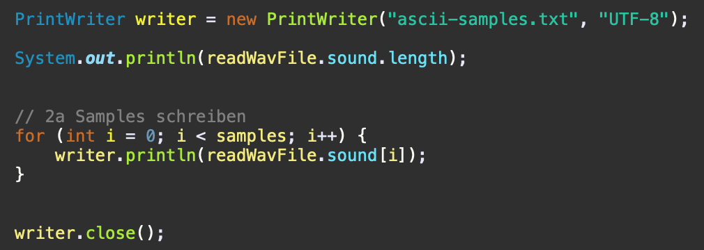
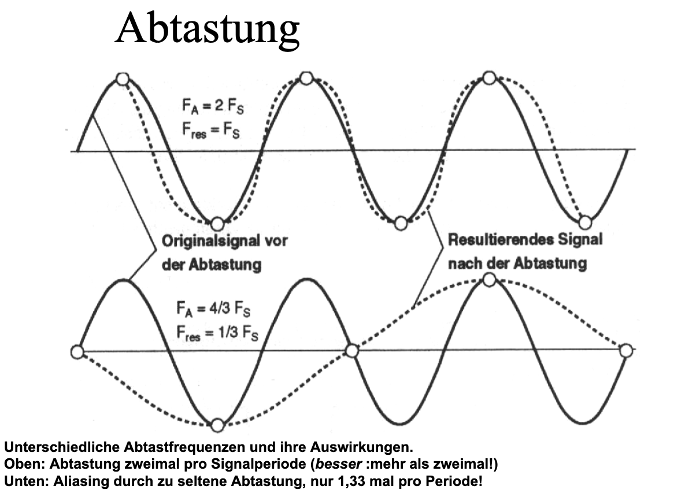

Übung 1, Aufgabe 1: Audiodateien erzeugen und einlesen
Aufgabe 1a) Audio-Files zuschneiden
Parameter für Musik: fa=44,1 kHz, stereo, 16 Bit Auflösung:
Parameter für Sprache: fa=8 kHz (entsprechend stumpfer), mono, 16 Bit Auflösung:
Parameter für Musik: fa=44,1 kHz, stereo, 16 Bit Auflösung:
Parameter für Sprache: fa=8 kHz (entsprechend stumpfer), mono, 16 Bit Auflösung:
Die Sprachaufnahmen kann mit einer viel niedrigeren Abtastfrequenz gespeichert werden, da die Aufnahme dabei noch komplett verständlich bleibt. Bei dem Musikstück ist dies nicht der Fall. Hier würden bei einer Konvertierung zu 5 kHz die einzelnen Instrumente zum Teil verloren gehen. Die Aufnahme würde sich “Dumpf” anhören und die Instrumente wären nicht mehr zu unterscheiden.
| Angaben | Erklärung |
|---|---|
| Channels: 2 | Die Musik wurde als Stereo Datei gespeichert, deswegen hat die Datei 2 Channel |
| Frames: 223333 | Anzahl der Frames innerhalb der Datei liegt bei 223 333 Stück |
| Sample Rate: 44100 | Bei dieser Datei liegt die Abtastrate bei 44kHz |
| Valid Bits: 16 | Es gibt 16 gültige Bits |
| Bytes per sample: 2 | Die Anzahl der verwendeten Bytes pro Sample |
| Angaben | Erklärung |
|---|---|
| Channels: 1 | Die Sprache wurde als Mono Datei gespeichert, deswegen hat sie nur 1 Channel |
| Frames: 40003 | Anzahl der Frames innerhalb der Datei liegt bei 40 003 Stück |
| Sample Rate: 8000 | Bei dieser Datei liegt die Abtastrate bei 8kHz |
| Valid Bits: 16 | Es gibt 16 gültige Bits |
| Bytes per sample: 2 | Die Anzahl der verwendeten Bytes pro Sample |
Rechenbeispiel:
Bitrate = Kanäle x Samplerate x Auflösung Eine WAV-Datei in CD-Qualität hat folgende Bitrate:
2 Kanäle x 16 Bit x 44,1 kHz = 1411,2 kBit/s
| Musik | = 2 Kanäle * 16 Bit * 44,1 kHz = 1411,2 kBit/s |
|---|---|
| Sprache | = 1 Kanal * 16 Bit * 8 kHz = 128 kBits/s |
Mit folgendem Code schreiben wir die WAV-Dateien in lesbare ASCII-Dateien:
Als Code:
PrintWriter writer = new PrintWriter("ascii-samples.txt", "UTF-8");
System.out.println(readWavFile.sound.length);
// 2a Samples schreiben
for (int i = 0; i < samples; i++) {
writer.println(readWavFile.sound[i]);
}
writer.close();
Anschließend bestimmen wir aus den resultierenden Zahlenfolgen der Textdatei die Frequenz der Sinus Schwingungen der beiden Audio Files:
Grafik:
Rechnung:
Grafik:
Rechnung:
Man muss oft genug abtasten um keine essentiellen Daten zu verlieren.
